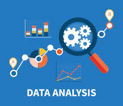
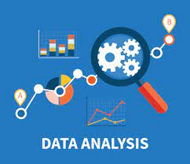

HI ALL I'M SIDDIQUE,
A passionate full-stack web developer with extensive experience in crafting dynamic web applications
using a versatile toolkit encompassing HTML, CSS, JavaScript, Node.js, React.js, PHP, and an array of
cutting-edge libraries and frameworks. Committed to optimizing user experiences, I thrive on creating
seamless front-end interfaces and robust back-end solutions. My dedication to staying current with an
industry trends and technologies ensures that I deliver innovative digital solutions that elevate the
online landscape, engaging and delighting users across the web.
Skills
- Web Development
- Graphic Design
- Content Writing
- Search Engine Optimization (SEO)
- Digital Marketing
- Data Analysis

 

Projects
Personal Website or Blog:
A personal website or blog serves as a digital canvas where individuals can express themselves, showcase their talents, and connect with a global audience. Whether you are a budding writer, an aspiring artist, a passionate photographer, or simply someone with a unique perspective on life, creating your own online platform can be an enriching and empowering experience. At its core, a personal website or blog is a place where your creativity and ideas can flourish. You have the freedom to design a digital space that represents you authentically, from the choice of colors and layout to the content you share. It's a canvas waiting for your unique brushstrokes. For writers, a blog becomes a medium to share stories, thoughts, and insights with readers worldwide. It can be a diary of personal experiences, a platform to voice opinions on various subjects, or a showcase for your fictional creations. With each post, you engage with your audience, sparking discussions and forging connections. Artists and photographers can transform their websites into virtual galleries, displaying their work in all its glory. You can captivate visitors with stunning visuals, tell the stories behind your creations, and even sell your art directly to interested buyers. It's a showcase for your talents and a marketplace for your creations. Beyond creative pursuits, a personal website can serve as a professional portfolio. If you're a web developer, designer, or any professional in the digital realm, your website becomes a testament to your skills and expertise. Display your projects, describe your services, and attract potential clients or employers. Moreover, a personal website grants you control over your online presence. You decide how you're perceived on the internet. It's a space where you can curate your digital identity, away from the noise of social media. In essence, a personal website or blog is a versatile and powerful tool. It's a platform for self-expression, a showcase for your talents, and a gateway to connect with like-minded individuals from around the globe. Whether you're embarking on a creative journey or seeking to establish your professional presence, your website is the canvas upon which your aspirations take shape. So, go ahead, build your digital home, and let your voice be heard in the vast expanse of the online world.
Data Visualization Dashboard:

A data visualization dashboard is a dynamic and interactive platform designed to transform complex data sets into insightful visual representations. In the era of big data, where information is abundant but understanding can be challenging, these dashboards play a pivotal role in helping individuals and organizations make data-driven decisions. At its core, a data visualization dashboard takes raw data, often from various sources, and translates it into visually appealing charts, graphs, maps, and other graphical elements. These visualizations serve as windows into the data, making it easier to grasp patterns, trends, and anomalies that might otherwise remain hidden in rows and columns of numbers. One of the primary advantages of a data visualization dashboard is its ability to provide a holistic view of data. Instead of sifting through spreadsheets or databases, users can access real-time, summarized information presented in a user-friendly manner. This accessibility empowers individuals across various domains, from business analysts and researchers to policymakers and healthcare professionals, to quickly derive insights and make informed decisions. Data visualization dashboards come in various forms, tailored to the specific needs of their users. For business intelligence, they can track key performance indicators (KPIs), monitor sales figures, and identify market trends. In healthcare, they can aid in patient care by visualizing medical records, tracking disease outbreaks, or displaying clinical trial results. Environmental scientists can use them to monitor climate data, and governments can employ them for public policy analysis. In addition to enhancing data comprehension, these dashboards foster collaboration and communication. They enable teams to share and discuss findings, fostering a data-driven culture within organizations. Moreover, they are often customizable, allowing users to choose the visualizations that best suit their needs and preferences. The technology behind data visualization dashboards has evolved significantly, with tools like Tableau, Power BI, and D3.js enabling the creation of sophisticated and interactive visualizations. As data continues to grow in volume and complexity, data visualization dashboards will remain essential tools for harnessing the power of information and turning it into actionable insights. They bridge the gap between data and understanding, making data not just accessible, but also comprehensible and actionable, for individuals and organizations alike.
Resume
 Click Here to Download
Click Here to Download
Contact
Email: mdsiddique5257@gmail.com
Phone:+91 9080419859
123A, 5th street navallur chennai
TAMIL NADU.